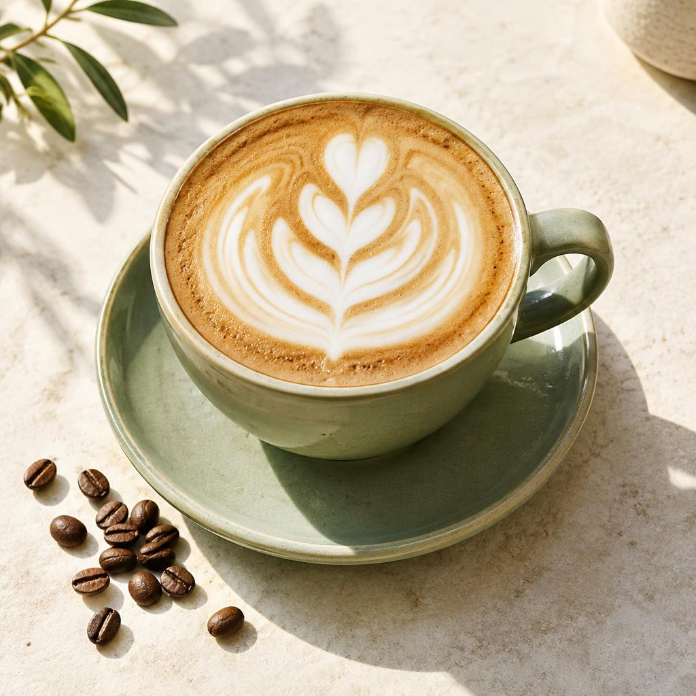
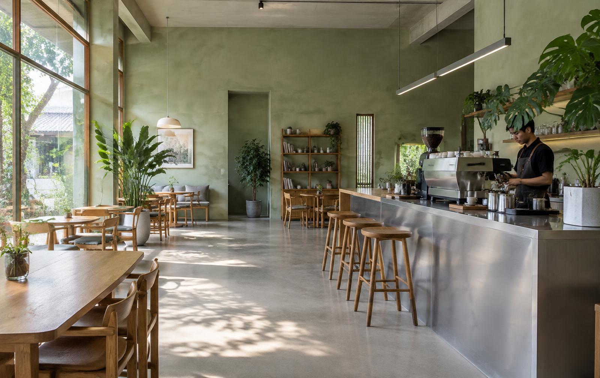

SignatureVylonium Latte
Rp 32.000Espresso yang lembut, susu segar, dan sentuhan manis yang pas.

Specialty coffee & everyday moments
Kopi yang baik.
Waktu yang berarti.
Untuk pagi yang pelan, percakapan yang panjang,
dan jeda kecil yang Anda butuhkan.
Cerita Vylonium
Kami percaya, hal-hal baik tidak perlu terburu-buru. Vylonium berawal dari keinginan sederhana: menciptakan ruang di mana kopi yang enak bertemu dengan rasa nyaman.
Biji pilihan dari petani lokal, tangan yang telaten, dan meja yang selalu terbuka. Untuk bekerja, berbagi cerita, atau sekadar menikmati waktu sendiri.
Sudut-sudut yang hangat
Cahaya sore, aroma kopi, dan kursi favorit.
Mungkin ini tempat baru Anda.
“Kopinya enak, suasananya bikin betah. Sudut dekat jendela sudah jadi tempat favorit untuk baca buku.”
Nadia P. · Pencinta kopi Ulasan fiktif“Latte-nya lembut banget. Tempat yang pas untuk ngobrol tanpa harus buru-buru pulang.”
Raka A. · Tamu akhir pekan Ulasan fiktif“Croissant hangat dan kopi aren, kombinasi yang selalu bikin saya ingin kembali.”
Dinda S. · Tamu langganan Ulasan fiktifPintu kami terbuka
Datang sendiri atau bersama orang tersayang.
Kami siapkan kopi, Anda bawa ceritanya.
Jl. Taman Senja No. 18, Bandung
Jawa Barat, Indonesia · Alamat fiktif
Setiap hari · 08.00 – 22.00 WIB
Jam operasional contoh
Area indoor & taman · Wi-Fi · Pet-friendly terrace